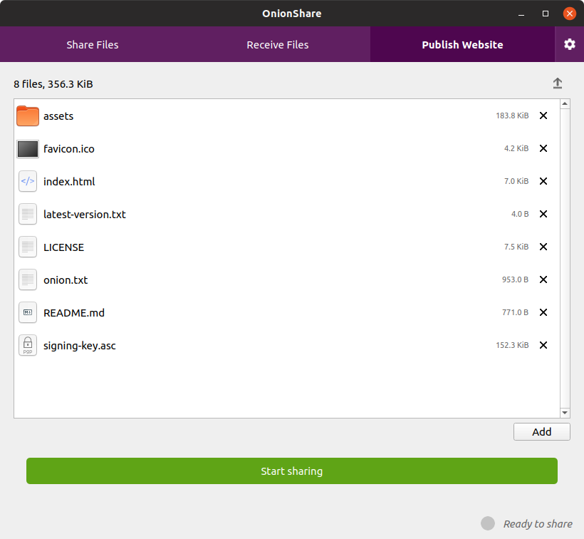

Tag: code

Qube Apps: a Flatpak-based app store for each qube
I really like Qubes but I haven't been using it a lot lately. I have a Qubes laptop that I use for specific high security tasks, but my daily driver the last few months has been Ubuntu or Pop!_OS (I really like the tiling windows and the design), and sometimes macOS. Qubes is great, but it can be cumbersome to use.

OnionShare 2.3 adds tabs, anonymous chat, better command line support, and quite a bit more
After a ridiculously long sixteen months (or roughly ten years in pandemic time) I'm excited to announce that OnionShare 2.3 is out! Download it from onionshare.org.
This version includes loads of new and exciting features which you can read about in much more detail on the brand new OnionShare documentation website, docs.onionshare.org. For now though I'm just going to go over the major ones: tabs, anonymous chat, and better command line support.

New version of OnionShare makes it easy for anyone to publish anonymous, uncensorable websites
I’m excited to announce that OnionShare 2.2 is released! You can download it from onionshare.org.
When I first wrote OnionShare in 2014, it let you anonymously and securely send files to people. It worked like this: OnionShare zips up the files, starts a local web server on your computer with a link to this zip file, makes this website accessible as a Tor onion service, and shows you the URL of the web server. You send someone this .onion URL, they load it in Tor Browser (loading the website hosted directly on your computer), and then they can download the zip file. As soon as the download is complete, OnionShare shuts down the web service.
In the years since then it has gotten a whole lot better (largely thanks to a growing community of volunteer contributors). Instead of just sending files, you can use it to receive files now, allowing you to turn your computer into an anonymous dropbox. But it has always worked the same way: hosting an anonymous website locally on your computer. But since OnionShare hosts a website on your computer anyway, why not use it to host actual websites?

With Semiphemeral you can delete your old Twitter likes, but it's noisy
I don't know if others use Twitter the same way that I do, but I tend to like things quite a bit more frequently than I tweet or retweet things. I'd imagine that if you analyzed my last 10 years of Twitter likes, you could learn much more about me than just by looking at my timeline. My likes probably reveal exactly which political, technical, and social arguments I followed, and which sides I took in all of them.
I recently programmed a tool called semiphemeral to automate deleting all of my old tweets (except for ones that I want to keep), and it also goes back and unlikes all of the tweets that I liked more than 60 days ago -- or, so I initially thought. It soon became clear that semiphemeral only actually deleted the most recent 4,000 likes.

Semiphemeral: Automatically delete your old tweets, except for the ones you want to keep
In the almost 10 years that I've been using Twitter, I tweeted about 13,700 times, retweeted about 9,000 tweets, and liked (or "favorited", as we called liking back in the day) about 14,000 tweets. I decided to delete most of them using a tool I just finished programming called semiphemeral. Here is why, and how.